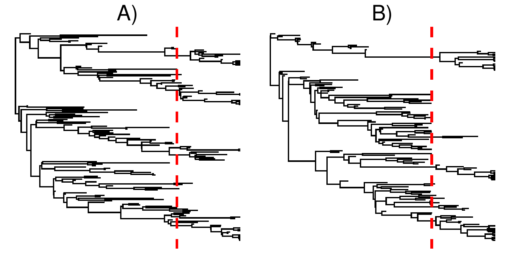
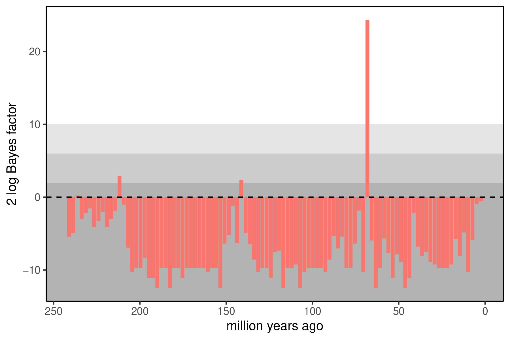

This tutorial describes how to infer mass extinctions using an episodic fossilized birth-death model in RevBayes.
The episodic birth-death model is a process where diversification rates vary episodically through time
and are modeled as piecewise-constant rates (Stadler 2011; Höhna 2015).
Your goal is to estimate whether or not there was a mass extinction using Markov chain Monte Carlo (MCMC).
This tutorial builds on the time-varying birth-death model in the Episodic Diversification Rate Estimation tutorial, where the theory of the underlying time-varying diversification model is covered. This model allows the incorporation of fossils in the phylogeny, so the Combined-Evidence Analysis and the Fossilized Birth-Death Process for Analysis of Extant Taxa and Fossil Specimens tutorial may also be of interest.
The basic idea behind the model is that speciation, extinction, and fossilization rates are constant within time intervals but can be different between time intervals. At these time points, the model allows for the possibility of a mass extinction, where every lineage dies instantaneously with some probability $M_i$. This instantaneous model of mass extinctions allows us to codify the fact that mass extinctions should lead to very large proportions of lineages dying off relatively quickly. It is important to account for variation in the per-lineage rates of speciation, extinction, and fossilization so that diversificaton-rate shifts are not misinterpreted as mass extinctions. To do this, we will use a Horseshoe Markov random field model (see the Episodic Diversification Rate Estimation for more specifics). An overview of the underlying theory of the specific model and implementation is given in (Magee and Höhna 2021).

shows an example of a tree without and a tree with a mass extinction, but with otherwise similar diversification rates. Note how the tree with a mass extinction contains a band of fossil tips shortly before the mass extinction time, and few lineages cross the boundary. This is to be expected, as mass extinctions kill off a majority of lineages alive at that time, thus few lineages survive and what might otherwise be sampled ancestors become tips.
In our inference model, each mass extinction probability will have a reversible jump mixture model prior with a probability $1 - p_M_i$ that there is no mass extinction. If there is a mass extinction, the probability that a lineage goes extinct at that time, $M_i$, will be modeled with a Beta distribution. The probability $p_M_i$ that there is a mass extinction will be small (mass extinctions are rare), but the probability of a lineage dying in a mass extinction will be large (most lineages die in a mass extinction). To model background rate variation, we use the Horseshoe Markov random field birth-death model as in the Episodic Diversification Rate Estimation tutorial.
Begin by reading in the ``observed’’ tree.
T <- readTrees("data/crocs_T1.tre")[1]
When the tree has fossils, it is best to read in the taxa from a taxon data file. This is absolutely required if the tree is to be simultaneously inferred.
taxa <- readTaxonData("data/crocs_taxa.txt",delim=TAB)
Additionally, we initialize a variable for our vector of moves and monitors.
moves = VectorMoves()
monitors = VectorMonitors()
Finally, we create a helper variable that specifies the number of intervals.
NUM_INTERVALS = 100
NUM_BREAKS := NUM_INTERVALS - 1
Using this variable we can easily change our script to break-up time into more
intervals (e.g., NUM_INTERVALS = 200) for finer resolution on the mass extinctions.
The model formulation we are using assumes that time points are evenly spaced. We must now create this vector of times to give to the birth death model.
interval_times <- abs(T.rootAge() * seq(1, NUM_BREAKS, 1)/NUM_INTERVALS)
This vector of times will be used for the speciation, extinction, and fossilization rates, as well as the mass extinctions. Also, remember that the times of the intervals represent ages going backwards in time.
Recall that the prior on mass extinctions is done with a reversible jump mixture model. This means our prior on mass extinctions comes in two parts: the probability that there is a mass extinction at any time interval, and the probability that a lineage dies in that mass extinction. We set the reversible jump probability in terms of the prior expected number of mass extinctions experienced. For example, we might set the prior to 0.5 or 1.0 as a conservative prior estimate of the number of mass extinctions that shaped this tree.
expected_number_of_mass_extinctions <- 1.0
Since there are NUM_BREAKS possible extinction locations, this makes the probability that there is NOT a mass extinction at any one of them 1 - expected_number_of_mass_extinctions/NUM_BREAKS.
mix_p <- Probability(1.0 - expected_number_of_mass_extinctions/NUM_BREAKS)
We must also choose a prior on the probability that a lineage dies at a mass extinction (when there is a non-zero mass extinction). Mass extinctions kill a large majority of lineages, so we use a Beta(18,2) prior, which correspondingly has a mean of 0.9 and a 95% CI of [0.74,0.987]. Our full prior then says the following: mass extinctions are rare, but when they occur they kill most lineages.
Now we must use these choices to set up the prior on all NUM_BREAKS possible mass extinctions.
for (i in 1:NUM_BREAKS) {
mass_extinction_probabilities[i] ~ dnReversibleJumpMixture(0.0,dnBeta(18.0,2.0),mix_p)
moves.append( mvRJSwitch(mass_extinction_probabilities[i]) )
moves.append( mvSlideBactrian(mass_extinction_probabilities[i]) )
}
We must attach a reversible jump move to investigate whether there is or is not a mass extinction. We must also attach a move to explore the probability of death (when there is a mass extinction).
Now we must specify prior distributions on the rates of speciation, extinction, and fossilization through time.
The overall model is a Horseshoe Markov random field (HSMRF) birth-death model Magee et al. (2020).
In this model, the changes in log-scale rates between intervals follow a Horseshoe distribution Carvalho et al. (2010), which allows for large jumps in rate while assuming most changes are very small.
We need a parameter to control the overall variability from present to past in the diversification rates, the global scale parameter.
We must also set the global scale hyperprior, which acts with the global scale parameter to set the prior on rate variability.
In this example, we use 100 rate intervals, but the HSMRF enables us to use larger numbers.
The global scale hyperprior should be set based on how many intervals are used, in the case of 100 intervals, use 0.0021.
RevGadgets provides the function setMRFGlobalScaleHyperpriorNShifts() to compute this parameter for other numbers of intervals.
speciation_rate_global_scale_hyperprior <- 0.0021
extinction_rate_global_scale_hyperprior <- 0.0021
fossilization_rate_global_scale_hyperprior <- 0.0021
speciation_rate_global_scale ~ dnHalfCauchy(0,1)
extinction_rate_global_scale ~ dnHalfCauchy(0,1)
fossilization_rate_global_scale ~ dnHalfCauchy(0,1)
As we mentioned, we will apply HSMRF distributions as prior for the log-transformed speciation, extinction, and fossilization rates. We begin with the rates at the present which is our initial rate parameter. The rates at the present will be specified slightly differently because they are not correlated to any previous rates. This is because we are actually modeling rate-changes backwards in time and there is no previous rate for the rate at the present. Modeling rates backwards in time makes it easier for us if we had some prior information about some event affected diversification sometime before the present, e.g., 25 million years ago.
Given that the full model contains many parameters, we set the prior on the
first rate using an empirical Bayes strategy.
In this approach, we first fit a constant-rate FBD model, then use the posterior
distribution on those rates to determine the prior on the rate at present.
Here, this has already been done and a gamma prior has been fit to the samples.
The script mcmc_CRFBD.Rev can be used to run the constant-rate analysis,
and the RevGadgets function posteriorSamplesToParametricPrior() can be used
to fit a distribution to the posterior samples.
The following three Gamma priors are suitable only for analyses of the Wilberg et al. (2019) datasets.
New priors must be set for new datasets.
The script fit_gamma_distributions.R shows you how to set the priors, using this Crocodylomorph dataset as an example, assuming you have run mcmc_CRFBD.Rev.
speciation_rate_hyperprior_alpha <- 8.333449
speciation_rate_hyperprior_beta <- 24.432402
extinction_rate_hyperprior_alpha <- 8.28311
extinction_rate_hyperprior_beta <- 24.34245
fossilization_rate_hyperprior_alpha <- 8.964942
fossilization_rate_hyperprior_beta <- 2717.621689
speciation_rate_at_present ~ dnGamma(speciation_rate_hyperprior_alpha,speciation_rate_hyperprior_beta)
extinction_rate_at_present ~ dnGamma(extinction_rate_hyperprior_alpha,extinction_rate_hyperprior_beta)
fossilization_rate_at_present ~ dnGamma(fossilization_rate_hyperprior_alpha,fossilization_rate_hyperprior_beta)
We apply a variety of moves to the rates at present individually.
moves.append( mvScaleBactrian(speciation_rate_at_present,weight=5) )
moves.append( mvScaleBactrian(extinction_rate_at_present,weight=5) )
moves.append( mvScaleBactrian(fossilization_rate_at_present,weight=5) )
moves.append( mvMirrorMultiplier(speciation_rate_at_present,weight=5) )
moves.append( mvMirrorMultiplier(extinction_rate_at_present,weight=5) )
moves.append( mvMirrorMultiplier(fossilization_rate_at_present,weight=5) )
moves.append( mvRandomDive(speciation_rate_at_present,weight=5) )
moves.append( mvRandomDive(extinction_rate_at_present,weight=5) )
moves.append( mvRandomDive(fossilization_rate_at_present,weight=5) )
We also apply joint moves to account for the correlation between the parameters.
avmvn_rates_at_present = mvAVMVN(weight=50)
avmvn_rates_at_present.addVariable(speciation_rate_at_present)
avmvn_rates_at_present.addVariable(extinction_rate_at_present)
avmvn_rates_at_present.addVariable(fossilization_rate_at_present)
moves.append( avmvn_rates_at_present )
up_down_move = mvUpDownScale(weight=5.0)
up_down_move.addVariable(speciation_rate_at_present,TRUE)
up_down_move.addVariable(extinction_rate_at_present,TRUE)
moves.append( up_down_move )
To make MCMC possible for the HSMRF model, we use what is called a non-centered parameterization.
This means that first we specify the log-scale changes in rate between intervals, and later we assemble these into the vector of rates.
The HSMRF also requires a vector of local scale parameters.
These give the HSMRF a property called local adaptivity, which allow it to have rapidly varying rates in some intervals and nearly constant rates in others.
This can be done efficiently using a for-loop.
In this loop we also attach a variety of moves to improve MCMC mixing, but as with the Episodic Diversification Rate Estimation tutorial, we will also use HSMRF-specific moves.
for (i in 1:NUM_BREAKS) {
# Variable-scaled variances for hierarchical horseshoe
sigma_speciation_rate[i] ~ dnHalfCauchy(0,1)
sigma_extinction_rate[i] ~ dnHalfCauchy(0,1)
sigma_fossilization_rate[i] ~ dnHalfCauchy(0,1)
# Make sure values initialize to something reasonable
sigma_speciation_rate[i].setValue(runif(1,0.005,0.1)[1])
sigma_extinction_rate[i].setValue(runif(1,0.005,0.1)[1])
sigma_fossilization_rate[i].setValue(runif(1,0.005,0.1)[1])
# moves on the single sigma values
moves.append( mvScaleBactrian(sigma_speciation_rate[i], weight=5) )
moves.append( mvScaleBactrian(sigma_extinction_rate[i], weight=5) )
moves.append( mvScaleBactrian(sigma_fossilization_rate[i], weight=5) )
# non-centralized parameterization of horseshoe
delta_log_speciation_rate[i] ~ dnNormal( mean=0, sd=sigma_speciation_rate[i]*speciation_rate_global_scale*speciation_rate_global_scale_hyperprior )
delta_log_extinction_rate[i] ~ dnNormal( mean=0, sd=sigma_extinction_rate[i]*extinction_rate_global_scale*extinction_rate_global_scale_hyperprior )
delta_log_fossilization_rate[i] ~ dnNormal( mean=0, sd=sigma_fossilization_rate[i]*fossilization_rate_global_scale*fossilization_rate_global_scale_hyperprior )
# Make sure values initialize to something reasonable
delta_log_speciation_rate[i].setValue(runif(1,-0.1,0.1)[1])
delta_log_extinction_rate[i].setValue(runif(1,-0.1,0.1)[1])
delta_log_fossilization_rate[i].setValue(runif(1,-0.1,0.1)[1])
moves.append( mvSlideBactrian(delta_log_speciation_rate[i], weight=5) )
moves.append( mvSlideBactrian(delta_log_extinction_rate[i], weight=5) )
moves.append( mvSlideBactrian(delta_log_fossilization_rate[i], weight=5) )
delta_up_down_move[i] = mvUpDownSlide(weight=5.0)
delta_up_down_move[i].addVariable(delta_log_speciation_rate[i],TRUE)
delta_up_down_move[i].addVariable(delta_log_extinction_rate[i],TRUE)
moves.append( delta_up_down_move[i] )
}
Now, we take the pieces we have for the rates (the global and local scales, the rate at the present, and the log-changes) and we assemble the overall rates.
speciation_rate := fnassembleContinuousMRF(speciation_rate_at_present,delta_log_speciation_rate,initialValueIsLogScale=FALSE,order=1)
extinction_rate := fnassembleContinuousMRF(extinction_rate_at_present,delta_log_extinction_rate,initialValueIsLogScale=FALSE,order=1)
fossilization_rate := fnassembleContinuousMRF(fossilization_rate_at_present,delta_log_fossilization_rate,initialValueIsLogScale=FALSE,order=1)
The HSMRF requires a unique set of MCMC samplers to work. While we can (and did) place individual moves on the local and global scales and the log-changes, adequate MCMC sampling requires moves that exploit the structure of the model. These moves are the elliptical slice sampler that works on the log-changes, a Gibbs sampler for the global and local scales, and a recommended swap move (that works on both).
# Move all field parameters in one go
moves.append( mvEllipticalSliceSamplingSimple(delta_log_speciation,weight=5,tune=FALSE) )
moves.append( mvEllipticalSliceSamplingSimple(delta_log_extinction,weight=5,tune=FALSE) )
moves.append( mvEllipticalSliceSamplingSimple(delta_log_fossilization,weight=5,tune=FALSE) )
# Move all field hyperparameters in one go
moves.append( mvHSRFHyperpriorsGibbs(speciation_rate_global_scale, sigma_speciation , delta_log_speciation , speciation_rate_global_scale_hyperprior, propGlobalOnly=0.75, weight=10) )
moves.append( mvHSRFHyperpriorsGibbs(extinction_rate_global_scale, sigma_extinction , delta_log_extinction , extinction_rate_global_scale_hyperprior, propGlobalOnly=0.75, weight=10) )
moves.append( mvHSRFHyperpriorsGibbs(fossilization_rate_global_scale, sigma_fossilization , delta_log_fossilization , fossilization_rate_global_scale_hyperprior, propGlobalOnly=0.75, weight=10) )
# Swap moves to exchange adjacent delta,sigma pairs
moves.append( mvHSRFIntervalSwap(delta_log_speciation ,sigma_speciation ,weight=5) )
moves.append( mvHSRFIntervalSwap(delta_log_extinction ,sigma_extinction ,weight=5) )
moves.append( mvHSRFIntervalSwap(delta_log_fossilization ,sigma_fossilization ,weight=5) )
We know that we have sampled 14 out of 23 living Crocodilian species. To account for this we can set the sampling parameter as a constant node with a value of 14/23. For simplicity we assume uniform taxon sampling (Höhna et al. 2011; Höhna 2014),
sampling_at_present <- 14/23
The birth-death process requires a parameter for the root age. In this exercise we use a fixed tree and thus we know the age of the tree. Hence, we can get the value for the root from the Wilberg et al. (2019) tree.
root_time <- T.rootAge()
Now we have all of the parameters we need to specify the full episodic birth-death model. We initialize the stochastic node representing the time tree.
timetree ~ dnFBDP(
rootAge = T.rootAge(),
timeline = interval_times,
lambda = speciation_rate,
mu = extinction_rate,
phi = fossilization_rate,
Mu = mass_extinction_probabilities,
Phi = sampling_at_present,
condition = "time",
taxa = taxa,
initialTree = T)
You may notice that we explicitly specify that we want to condition on the time of the process. It is possible to change this condition to the the fact that we have sampled the root (and at least one lineage has survived to the present).
Then we attach data to the timetree variable.
timetree.clamp(T)
Finally, we create a workspace object of our whole model using the model() function.
mymodel = model(speciation_rate)
The model() function traversed all of the connections and found all of the nodes we specified.
For our MCMC analysis, we need to set up a vector of monitors to record the states of our Markov chain.
First, we will initialize the model monitor using the mnModel function.
This creates a new monitor variable that will output the states for all model parameters
when passed into a MCMC function.
monitors.append( mnModel(filename="output/crocs_EFBDME.log",printgen=10, separator = TAB) )
Additionally, we create four separate file monitors, one for each vector of speciation and extinction rates and for each speciation and extinction rate epoch (\IE the times when the interval ends). We want to have the speciation and extinction rates stored separately so that we can plot them nicely afterwards.
monitors.append( mnModel(filename="output/crocs_EFBDME.log",printgen=10, separator = TAB) )
monitors.append( mnFile(filename="output/crocs_EFBDME_speciation_rates.log",printgen=10, separator = TAB, speciation_rate) )
monitors.append( mnFile(filename="output/crocs_EFBDME_speciation_rate_times.log",printgen=10, separator = TAB, interval_times) )
monitors.append( mnFile(filename="output/crocs_EFBDME_extinction_rates.log",printgen=10, separator = TAB, extinction_rate) )
monitors.append( mnFile(filename="output/crocs_EFBDME_extinction_rate_times.log",printgen=10, separator = TAB, interval_times) )
monitors.append( mnFile(filename="output/crocs_EFBDME_fossilization_rates.log",printgen=10, separator = TAB, fossilization_rate) )
monitors.append( mnFile(filename="output/crocs_EFBDME_fossilization_rate_times.log",printgen=10, separator = TAB, interval_times) )
monitors.append( mnFile(filename="output/crocs_EFBDME_mass_extinction_probabilities.log",printgen=10, separator = TAB, fossilization_rate) )
monitors.append( mnFile(filename="output/crocs_EFBDME_mass_extinction_times.log",printgen=10, separator = TAB, interval_times) )
Finally, we create a screen monitor that will report the states of specified variables
to the screen with mnScreen:
monitors.append( mnScreen(printgen=1000, speciation_rate_global_scale, extinction_rate_global_scale, fossilization_rate_global_scale) )
With a fully specified model, a set of monitors, and a set of moves,
we can now set up the MCMC algorithm that will sample parameter values in proportion
to their posterior probability.
The mcmc() function will create our MCMC object:
mymcmc = mcmc(mymodel, monitors, moves, nruns=2, combine="mixed")
Now, run the MCMC. This will take some time, this model has roughly 700 parameters to infer which are generally correlated with each other.
mymcmc.run(generations=300000, tuningInterval=200)
When the analysis is complete, you will have the monitored files in your output directory. The Episodic Diversification Rate Estimation tutorial covers how to summarize the continuous rates of speciation, extinction, and fossilization through time. The key summary for the mass extinctions is the posterior support for the presence of a mass extinction at any interval. Since we have used reversible jump mixture models, the posterior distribution for each has some samples where the mass extinction was disallowed (and the $M_i$ is exactly 0). If there is support for a mass extinction, there will also be samples with mass extinctions (where $M_i$ is not 0). We can use Bayes factors to summarize how significant support is for a mass extinction at any time, with a 2 log Bayes factor threshold of 10 indicating strong support.
You can visualize the support at the allowed mass extinction times using R using our package RevGadgets.
If you don’t have the R-package RevGadgets installed, or if you have trouble with the package, then please read the separate tutorial about the package.
Note that you will have to give RevGadgets some information about the model setup from the Rev script for it to function.
Just start R in the main directory for this analysis and then type the following commands:
library(RevGadgets)
mass_extinction_probabilities <- readTrace("output/crocs_EFBDME_mass_extinction_probabilities.log",burnin = 0.25)
# prior probability of mass extinction at any time
prior_n_expected <- 0.1
n_intervals <- 100
prior_prob <- prior_n_expected/(n_intervals-1)
# times when mass extinctions were allowed
tree_age <- 243.5
interval_times <- tree_age * seq(1/n_intervals,(n_intervals-1)/n_intervals,1/n_intervals)
# then plot results:
p <- plotMassExtinctions(mass.extinction.trace=mass_extinction_probabilities,mass.extinction.times=interval_times,mass.extinction.name="mass_extinction_probabilities",prior_prob)
pdf("mass_extinction_Bayes_factors.pdf")
p
dev.off()
⇨ The Rev file for performing this analysis: mcmc_EFBD_mass_extinctions.Rev

R.speciation_global_scale, extinction_global_scale, and fossilization_global_scale in Tracer: Is there information in the data to change the estimates from the prior?expected_number_of_mass_extinctions to something other than 1.0, like 0.5 or 2.0 (or even something much smaller or bigger like 0.1 or 10).